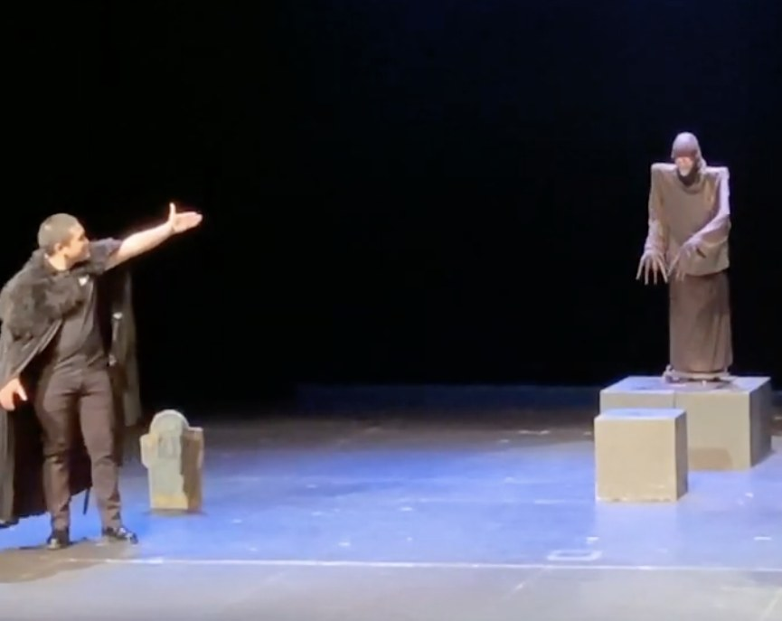
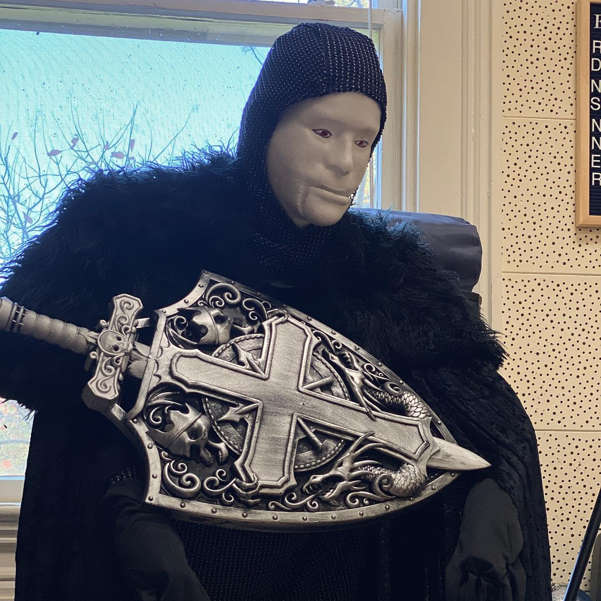

The scene
Mozartistry was a showcase of twelve Mozart opera scenes. In the graveyard scene from Don Giovanni, Giovanni and his servant Leporello come upon a statue commemorating the man Giovanni killed. In our staging, the statue was a robot. As Giovanni joked, its mouth opened and laughter came out. Leporello turned, saw the statue moving and bowing, and was terrified. Giovanni refused to believe him and, as a joke, told Leporello to invite the statue to dinner.
The scene ran about eight minutes. The audience was not told ahead of time that a robot was in the cast.
How it came together
Dr. Heather Knight, a roboticist at Oregon State, and I met to decide what role a robot could play and what it would need to do. Over a three-month collaboration, Janani Swaminathan and Denisse Alvarado, robot designers in her lab, designed and built it. They brought it to our rehearsals, set it up each time, and revised it after every session. By opening night it had been through five rehearsals and a full tech process, like any other member of the company.
A stone statue that comes to life asks a human performer to move like something that is not human. For a robot, that stiffness is native. The challenge was the opposite one: deciding how little it should do.
Choices I made as director
Stillness first. I found that the character called for restraint. As I put it in the study’s interview: “Less is more. If you’re going for a strong, scary character, the less movement the better.” The authors note that this maps to earlier robotics work using Laban features.
Four movements, each with a job. The robot could open and close its jaw, so it could mimic singing; turn its head and body, so the statue’s gaze could follow the singers; bow, as a knight would; and light up its eyes. The bow and the eyes became part of the design as rehearsals went on. The eyes were the roboticists’ suggestion, and I took it up because it was something I could never ask of a human actor: “I wouldn’t have tried to make my actor’s eyes light up for example, right? So, that’s something we added because of the robot.” The Commendatore returns at the end of the opera to drag Giovanni to hell, so this was a big moment and his introduction in this form.
Staging did half the work. We placed the robot on a pedestal at one side of the stage. That meant a turn of the head was enough, and the height let it tower over the singers. We also added reverb to its voice, an easy audio-only change that made it sound larger and more menacing.
Costume carried the character. The roboticists handed costuming to the performance side of the team. Stuffed gloves gave the robot hands with palms. A long black skirt hid the electronics and helped make it a knight, and a chainmail hood finished the picture.

Live timing. I sang the Commendatore’s voice from the side of the stage while operating the robot. The roboticists suggested a recorded track. I said no: “with live musicians your tempo is always going to change… So, that’s why for the voice of the robot, I’m going to be doing it myself.” In opera the pianist leads the timing, so the robot had to follow the pianist, and as operator and voice I was the link between them.
What the study found
The authors recorded the process through rehearsal notes, video, design documents, and interviews with me and with the two singers who shared the scene. From that material they draw four lessons for roboticists building expressive robots:
- Let the character suggest and simplify the specifications.
- Use set design for spatial expression and control.
- Give the robot capabilities a human performer does not have.
- Use costume to reduce mechanical complexity.
They also describe two practical needs that theatre treats as ordinary: a robot that can be moved on and off stage quickly and reliably, and control that stays flexible enough to follow live performers.
What I take from it as a teacher
The robot made a principle I teach easy to see. Restraint clarifies subtext: when a performer has only a few moves, each one has to mean something. Young singers often arrive with the opposite habit, gesturing out of nervousness. A robot cannot fidget, so every motion in this scene was chosen. That is the standard I ask of singers, and the collaboration reminded me that tactical choices (what the character wants, what the body does about it, where the eyes land) can be specified, tested in rehearsal, and revised, which is what the roboticists and I did each week.
The paper
I am not an author of the paper. I am the stage director described in the study, and the authors thank me in their acknowledgments. Dr. Knight presented the work on September 11, 2025, in the Robots on Stage special session of ICSR+AI 2025 in Naples, Italy.
Swaminathan, J., Alvarado, D., & Knight, H. (2026). OperaBot: A performer led robot theater collaboration. In M. Staffa et al. (Eds.), Social Robotics + AI: ICSR+AI 2025 (Lecture Notes in Computer Science, vol. 16133, pp. 700–717). Springer, Singapore.
Video from the lab: the performance and the cast on working with the robot.